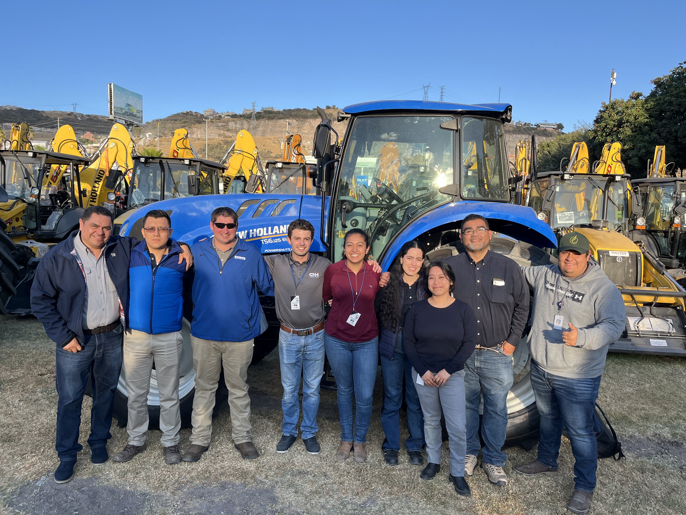
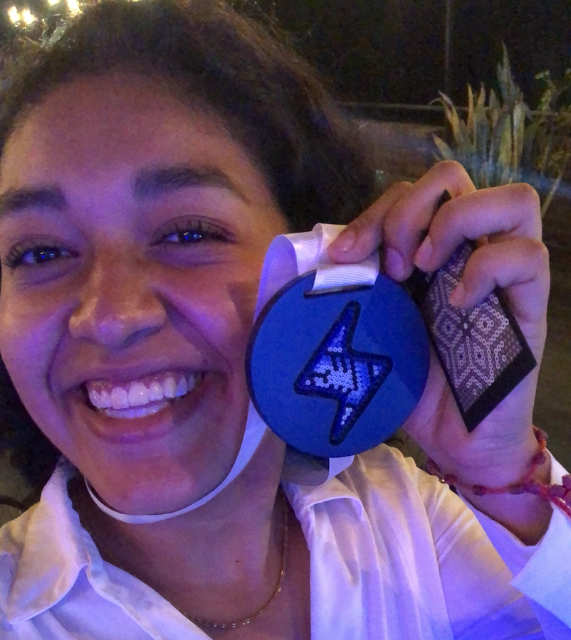

Proyectos destacados

Telemetría agrícola
Implementación de plataformas digitales para monitoreo de tractores y análisis agronómico en CNH.

Expo Agroalimentaria
Evento organizado como presidenta de SEIAG, fortaleciendo la red de estudiantes y profesionistas del sector.

Fertilizante orgánico
Proyecto emprendedor premiado, basado en lombricomposta, orientado a agricultura sostenible.